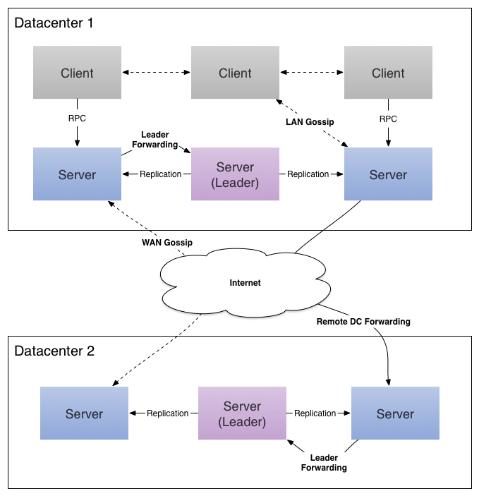

<!DOCTYPE HTML>
<html lang="zh-CN">
<head><meta name="generator" content="Hexo 3.8.0">
    <!--Setting-->
    <meta charset="UTF-8">
    <meta name="viewport" content="width=device-width, user-scalable=no, initial-scale=1.0, maximum-scale=1.0, minimum-scale=1.0">
    <meta http-equiv="X-UA-Compatible" content="IE=Edge,chrome=1">
    <meta http-equiv="Cache-Control" content="no-siteapp">
    <meta http-equiv="Cache-Control" content="no-transform">
    <meta http-equiv="pragma" content="no-cache">
    <meta http-equiv="Cache-Control" content="no-cache, must-revalidate">
    <meta http-equiv="expires" content="Mon Apr 06 2020 02:12:38 GMT+0800 (CST)">
    <meta name="renderer" content="webkit|ie-comp|ie-stand">
    <meta name="apple-mobile-web-app-capable" content="张万众的博客 - 关注Spring Cloud、Docker">
    <meta name="apple-mobile-web-app-status-bar-style" content="black">
    <meta name="format-detection" content="telephone=no,email=no,adress=no">
    <meta name="browsermode" content="application">
    <meta name="screen-orientation" content="portrait">
    <meta name="theme-version" content="1.2.3">
    <meta name="root" content="/">
    
    <!--SEO-->

    <meta name="keywords" content="Spring Cloud,Spring Cloud Consul,Consul">


    <meta name="description" content="
TIPS

本文基于Consul 1.5.3，理论适用于Consul 1.6及更低版本。
安装单机版Consul详见：《安装单机版Consul》


知识预热Consul常用命令


命令
解释
示例


agent
运行一个consul agent
consul agent -dev
...">


<meta name="robots" content="all">
<meta name="google" content="all">
<meta name="googlebot" content="all">
<meta name="verify" content="all">
    <!--Title-->


<title>安装Consul集群 | 张万众的博客 - 关注Spring Cloud、Docker</title>


    <link rel="alternate" href="../../atom.html" title="张万众的博客 - 关注Spring Cloud、Docker" type="application/atom+xml">


    

    


<link rel="stylesheet" href="../../static/css/bootstrap.min-271a649e0635d6fa1b.css">
<link rel="stylesheet" href="../../static/css/font-awesome.min-ac2bebcf7fb5b26.css">
<link rel="stylesheet" href="../../static/css/style-6f3c140f6eee20e6591da00ec0.css">


    


    <script>
        var _hmt = _hmt || [];
        (function() {
            var hm = document.createElement("script");
            hm.src = "https://hm.baidu.com/hm.js?13766878cde148282622871dd245a973";
            var s = document.getElementsByTagName("script")[0];
            s.parentNode.insertBefore(hm, s);
        })();
    </script>


    

</head>

</html>
<!--[if lte IE 8]>
<style>
    html{ font-size: 1em }
</style>
<![endif]-->
<!--[if lte IE 9]>
<div style="ie">你使用的浏览器版本过低，为了你更好的阅读体验，请更新浏览器的版本或者使用其他现代浏览器，比如Chrome、Firefox、Safari等。</div>
<![endif]-->

<body>
    
    <nav class="main-navigation">
    <div class="container">
        <div class="row clearfix">
            <div class="col-md-12 column">
                <nav class="navbar navbar-default" style="background-color:#fff;border:0;margin-bottom:0" role="navigation">
                    <div class="navbar-header">
                        <button type="button" class="navbar-toggle" data-toggle="collapse" data-target="#navbar-collapse-1">
                            <span class="sr-only">切</span>
                            <span class="icon-bar"></span>
                            <span class="icon-bar"></span>
                            <span class="icon-bar"></span>
                        </button>
                        <a class="logo" href="../../index.html">
                            张万众的博客
                        </a>
                    </div>

                    <div class="collapse navbar-collapse" style="border:0;" id="navbar-collapse-1">
                        <ul class="nav navbar-nav">
                            
                                
                                    <li>
                                        <a href="../../about.html" target="_blank">
                                            <i class="fa fa-user"></i>
                                            关于我
                                        </a>
                                    </li>
                                
                            
                                
                                    <li>
                                        <a href="../../archives.html" target="_blank">
                                            <i class="fa fa-archive"></i>
                                            归档
                                        </a>
                                    </li>
                                
                            
                                
                                    <li class="dropdown">
                                        <a href="#" class="dropdown-toggle" data-toggle="dropdown" data-hover="dropdown">
                                            <i class="fa fa-fire"></i>
                                            系列课程
                                            <strong class="caret"></strong>
                                        </a>
                                        <ul class="dropdown-menu">
                                            
                                                <li>
                                                    <a href="../../docker/00-docker-lession-index.html" target="_blank">
                                                        <i class="fa "></i>
                                                        Docker系列教程
                                                    </a>
                                                </li>
                                            
                                                <li>
                                                    <a href="../spring-cloud-index.html" target="_blank">
                                                        <i class="fa "></i>
                                                        Spring Cloud系列教程
                                                    </a>
                                                </li>
                                            
                                                <li>
                                                    <a href="../../spring-boot/spring-boot-index.html" target="_blank">
                                                        <i class="fa "></i>
                                                        Spring Boot系列教程
                                                    </a>
                                                </li>
                                            
                                        </ul>
                                    </li>
                                
                            
                                
                                    <li class="dropdown">
                                        <a href="#" class="dropdown-toggle" data-toggle="dropdown" data-hover="dropdown">
                                            <i class="fa fa-book"></i>
                                            开源书
                                            <strong class="caret"></strong>
                                        </a>
                                        <ul class="dropdown-menu">
                                            
                                                <li>
                                                    <a href="../../books/rocketmq.html" target="_blank">
                                                        <i class="fa fa-rocket"></i>
                                                        RocketMQ开发者指南
                                                    </a>
                                                </li>
                                            
                                                <li>
                                                    <a href="../../books/skywalking.html" target="_blank">
                                                        <i class="fa fa-skyatlas"></i>
                                                        Skywalking 6.2.0中文文档
                                                    </a>
                                                </li>
                                            
                                        </ul>
                                    </li>
                                
                            
                                
                                    <li class="dropdown">
                                        <a href="#" class="dropdown-toggle" data-toggle="dropdown" data-hover="dropdown">
                                            <i class="fa fa-cog"></i>
                                            工具
                                            <strong class="caret"></strong>
                                        </a>
                                        <ul class="dropdown-menu">
                                            
                                                <li>
                                                    <a href="../../tools/markdown2.html" target="_blank">
                                                        <i class="fa "></i>
                                                        微信排版工具2.0
                                                    </a>
                                                </li>
                                            
                                        </ul>
                                    </li>
                                
                            
                        </ul>
                        
                            <form id="search-form" class="navbar-form navbar-right">
                                <div class="form-group input-group">
                                    <input type="text" id="local-search-input" class="form-control" placeholder="搜我...">
                                    <span class="input-group-btn">
                                        <a class="btn btn-default">
                                            <i class="fa fa-search"></i>
                                        </a>
                                    </span>
                                </div>
                                <div id="local-search-result" class="local-search-result-cls"></div>
                            </form>
                        
                    </div>
                </nav>
            </div>
        </div>
    </div>
</nav>

    <a href="javascript:;" target="_blank">
        
    </a>


    <section class="content-wrap">
        <div class="container">
            <div class="row">
                <main class="col-md-8 main-content m-post">
                    

<p id="process"></p>
<article class="post">
    <div class="post-head">
        <h1 id="安装Consul集群">
            
                安装Consul集群
            
        </h1>
        <div class="post-meta">
    
        <span class="categories-meta fa-wrap">
            <i class="fa fa-folder-open-o"></i>
            <a class="category-link" href="javascript:;">Spring Cloud</a>
        </span>
    

    
        <span class="fa-wrap">
            <i class="fa fa-tags"></i>
            <span class="tags-meta">
                
                    <a class="tag-link" href="javascript:;">Consul</a> <a class="tag-link" href="javascript:;">Spring Cloud</a> <a class="tag-link" href="javascript:;">Spring Cloud Consul</a>
                
            </span>
        </span>
    

    
        
        <span class="fa-wrap">
            <i class="fa fa-clock-o"></i>
            <span class="date-meta">2019/12/14</span>
        </span>
        
            <span class="fa-wrap">
                <i class="fa fa-eye"></i>
                <span id="busuanzi_value_page_pv"></span>
            </span>
        
    
</div>
        
        
    </div>
    
    <div class="post-body post-content" id="post-content">
        
    <div class="toc-article">
        <strong>
            目录
        </strong>
        <div class="toc-content">
            <ol class="toc"><li class="toc-item toc-level-2"><a class="toc-link" href="#知识预热"><span class="toc-text">知识预热</span></a><ol class="toc-child"><li class="toc-item toc-level-3"><a class="toc-link" href="#Consul常用命令"><span class="toc-text">Consul常用命令</span></a><ol class="toc-child"><li class="toc-item toc-level-4"><a class="toc-link" href="#参考文档"><span class="toc-text">参考文档</span></a></li></ol></li><li class="toc-item toc-level-3"><a class="toc-link" href="#consul-agent-命令详解"><span class="toc-text">consul agent 命令详解</span></a><ol class="toc-child"><li class="toc-item toc-level-4"><a class="toc-link" href="#常用选项"><span class="toc-text">常用选项</span></a></li><li class="toc-item toc-level-4"><a class="toc-link" href="#示例1：命令参数方式执行"><span class="toc-text">示例1：命令参数方式执行</span></a></li><li class="toc-item toc-level-4"><a class="toc-link" href="#示例2：配置文件方式执行"><span class="toc-text">示例2：配置文件方式执行</span></a></li><li class="toc-item toc-level-4"><a class="toc-link" href="#参考文档-1"><span class="toc-text">参考文档</span></a></li></ol></li></ol></li><li class="toc-item toc-level-2"><a class="toc-link" href="#Consul集群搭建"><span class="toc-text">Consul集群搭建</span></a><ol class="toc-child"><li class="toc-item toc-level-3"><a class="toc-link" href="#主机规划"><span class="toc-text">主机规划</span></a></li><li class="toc-item toc-level-3"><a class="toc-link" href="#搭建步骤"><span class="toc-text">搭建步骤</span></a></li><li class="toc-item toc-level-3"><a class="toc-link" href="#访问测试"><span class="toc-text">访问测试</span></a></li></ol></li><li class="toc-item toc-level-2"><a class="toc-link" href="#必看文章"><span class="toc-text">必看文章</span></a></li></ol>
        </div>
    </div>


        <blockquote>
<p><strong>TIPS</strong></p>
<ul>
<li>本文基于Consul 1.5.3，理论适用于Consul 1.6及更低版本。</li>
<li>安装单机版Consul详见：<a href="../consul-single/index.html">《安装单机版Consul》</a></li>
</ul>
</blockquote>
<h2 id="知识预热"><a href="#知识预热" class="headerlink" title="知识预热"></a>知识预热</h2><h3 id="Consul常用命令"><a href="#Consul常用命令" class="headerlink" title="Consul常用命令"></a>Consul常用命令</h3><table>
<thead>
<tr>
<th>命令</th>
<th>解释</th>
<th>示例</th>
</tr>
</thead>
<tbody>
<tr>
<td>agent</td>
<td>运行一个consul agent</td>
<td>consul agent -dev</td>
</tr>
<tr>
<td>join</td>
<td>将agent加入到consul集群</td>
<td>consul join IP</td>
</tr>
<tr>
<td>members</td>
<td>列出consul cluster集群中的members</td>
<td>consul members</td>
</tr>
<tr>
<td>leave</td>
<td>将节点移除所在集群</td>
<td>consul leave</td>
</tr>
</tbody>
</table>
<h4 id="参考文档"><a href="#参考文档" class="headerlink" title="参考文档"></a>参考文档</h4><p>这里只列出几个常用的命令，consul有将近20个命令，本文不作展开，详见：<a href="javascript:;" target="_blank" rel="noopener">https://www.consul.io/docs/commands/index.html</a></p>
<h3 id="consul-agent-命令详解"><a href="#consul-agent-命令详解" class="headerlink" title="consul agent 命令详解"></a><code>consul agent</code> 命令详解</h3><h4 id="常用选项"><a href="#常用选项" class="headerlink" title="常用选项"></a>常用选项</h4><p><code>consul agent</code> 命令的常用选项如下：</p>
<ul>
<li>-data-dir<ul>
<li>作用：指定agent储存状态的数据目录</li>
<li>这是所有agent都必须的</li>
<li>对于server尤其重要，因为他们必须持久化集群的状态</li>
</ul>
</li>
<li>-config-dir<ul>
<li>作用：指定service的配置文件和检查定义所在的位置</li>
<li>通常会指定为”某一个路径/consul.d”（通常情况下，.d表示一系列配置文件存放的目录）</li>
</ul>
</li>
<li>-config-file<ul>
<li>作用：指定一个要装载的配置文件</li>
<li>该选项可以配置多次，进而配置多个配置文件（后边的会合并前边的，相同的值覆盖）</li>
</ul>
</li>
<li>-dev<ul>
<li>作用：创建一个开发环境下的server节点</li>
<li>该参数配置下，不会有任何持久化操作，即不会有任何数据写入到磁盘</li>
<li>这种模式不能用于生产环境（因为第二条）</li>
</ul>
</li>
<li>-bootstrap-expect<ul>
<li>作用：该命令通知consul server我们现在准备加入的server节点个数，该参数是为了延迟日志复制的启动直到我们指定数量的server节点成功的加入后启动。</li>
</ul>
</li>
<li>-node<ul>
<li>作用：指定节点在集群中的名称</li>
<li>该名称在集群中必须是唯一的（默认采用机器的host）</li>
<li>推荐：直接采用机器的IP</li>
</ul>
</li>
<li>-bind<ul>
<li>作用：指明节点的IP地址</li>
<li>有时候不指定绑定IP，会报<code>Failed to get advertise address: Multiple private IPs found. Please configure one.</code>的异常</li>
</ul>
</li>
<li>-server<ul>
<li>作用：指定节点为server</li>
<li>每个数据中心（DC）的server数推荐至少为1，至多为5</li>
<li>所有的server都采用raft一致性算法来确保事务的一致性和线性化，事务修改了集群的状态，且集群的状态保存在每一台server上保证可用性</li>
<li>server也是与其他DC交互的门面（gateway）</li>
</ul>
</li>
<li>-client<ul>
<li>作用：指定节点为client，指定客户端接口的绑定地址，包括：HTTP、DNS、RPC</li>
<li>默认是127.0.0.1，只允许回环接口访问</li>
<li>若不指定为-server，其实就是-client</li>
</ul>
</li>
<li>-join<ul>
<li>作用：将节点加入到集群</li>
</ul>
</li>
<li>-datacenter（老版本叫-dc，-dc已经失效）<ul>
<li>作用：指定机器加入到哪一个数据中心中</li>
</ul>
</li>
</ul>
<h4 id="示例1：命令参数方式执行"><a href="#示例1：命令参数方式执行" class="headerlink" title="示例1：命令参数方式执行"></a>示例1：命令参数方式执行</h4><figure class="highlight shell"><table><tr><td class="gutter"><pre><span class="line">1</span><br></pre></td><td class="code"><pre><span class="line">consul agent -data-dir /tmp/node2 -node=node2 -bind=192.168.11.145 -datacenter=dc1 -ui -client=192.168.11.145</span><br></pre></td></tr></table></figure>
<h4 id="示例2：配置文件方式执行"><a href="#示例2：配置文件方式执行" class="headerlink" title="示例2：配置文件方式执行"></a>示例2：配置文件方式执行</h4><p>准备一个配置文件，名称任意，例如consul.json，内容如下：</p>
<figure class="highlight json"><table><tr><td class="gutter"><pre><span class="line">1</span><br><span class="line">2</span><br><span class="line">3</span><br><span class="line">4</span><br><span class="line">5</span><br><span class="line">6</span><br><span class="line">7</span><br><span class="line">8</span><br><span class="line">9</span><br><span class="line">10</span><br><span class="line">11</span><br><span class="line">12</span><br><span class="line">13</span><br><span class="line">14</span><br><span class="line">15</span><br><span class="line">16</span><br><span class="line">17</span><br><span class="line">18</span><br></pre></td><td class="code"><pre><span class="line">&#123;</span><br><span class="line">    <span class="attr">"datacenter"</span>: <span class="string">"us-east-1"</span>,</span><br><span class="line">    <span class="attr">"data_dir"</span>: <span class="string">"/Users/zhouli/develop/software/consul-data/"</span>,</span><br><span class="line">    <span class="attr">"addresses"</span>: &#123;</span><br><span class="line">        <span class="attr">"https"</span>: <span class="string">"0.0.0.0"</span></span><br><span class="line">    &#125;,</span><br><span class="line">    <span class="attr">"ports"</span>: &#123;</span><br><span class="line">        <span class="attr">"http"</span>: <span class="number">8500</span></span><br><span class="line">    &#125;,</span><br><span class="line">    <span class="attr">"acl"</span> : &#123;</span><br><span class="line">        <span class="attr">"enabled"</span>: <span class="literal">true</span>,</span><br><span class="line">        <span class="attr">"default_policy"</span>: <span class="string">"deny"</span>,</span><br><span class="line">        <span class="attr">"down_policy"</span>: <span class="string">"extend-cache"</span>,</span><br><span class="line">        <span class="attr">"tokens"</span> : &#123;</span><br><span class="line">          <span class="attr">"master"</span> : <span class="string">"b1gs33cr3t"</span></span><br><span class="line">        &#125;</span><br><span class="line">      &#125;</span><br><span class="line">&#125;</span><br></pre></td></tr></table></figure>
<p>启动时，让consul读取配置文件：</p>
<figure class="highlight shell"><table><tr><td class="gutter"><pre><span class="line">1</span><br></pre></td><td class="code"><pre><span class="line">consul agent -dev -config-file="consul-config/consul.json"</span><br></pre></td></tr></table></figure>
<h4 id="参考文档-1"><a href="#参考文档-1" class="headerlink" title="参考文档"></a>参考文档</h4><p><code>consul agent</code> 有20来个选项，本文只列出了常用选项，其他选项未作展开，详见： <a href="javascript:;" target="_blank" rel="noopener">https://www.consul.io/docs/agent/options.html</a></p>
<h2 id="Consul集群搭建"><a href="#Consul集群搭建" class="headerlink" title="Consul集群搭建"></a>Consul集群搭建</h2><p></p>
<h3 id="主机规划"><a href="#主机规划" class="headerlink" title="主机规划"></a>主机规划</h3><p>准备三台CentOS 7的虚拟机，主机规划如下：</p>
<table>
<thead>
<tr>
<th>主机名称</th>
<th>IP</th>
<th>作用</th>
<th>是否允许远程访问</th>
</tr>
</thead>
<tbody>
<tr>
<td>node0</td>
<td>192.168.11.143</td>
<td>consul server</td>
<td>是</td>
</tr>
<tr>
<td>node1</td>
<td>192.168.11.144</td>
<td>consul client</td>
<td>否</td>
</tr>
<tr>
<td>node2</td>
<td>192.168.11.145</td>
<td>consul client</td>
<td>是</td>
</tr>
</tbody>
</table>
<h3 id="搭建步骤"><a href="#搭建步骤" class="headerlink" title="搭建步骤"></a>搭建步骤</h3><ul>
<li>启动node0机器上的Consul（node0机器上执行）：</li>
</ul>
<figure class="highlight shell"><table><tr><td class="gutter"><pre><span class="line">1</span><br></pre></td><td class="code"><pre><span class="line">consul agent -data-dir /tmp/node0 -node=node0 -bind=192.168.11.143 -datacenter=dc1 -ui -client=192.168.11.143 -server -bootstrap-expect 1</span><br></pre></td></tr></table></figure>
<ul>
<li>启动node1机器上的Consul（node1机器上执行）：</li>
</ul>
<figure class="highlight shell"><table><tr><td class="gutter"><pre><span class="line">1</span><br></pre></td><td class="code"><pre><span class="line">consul agent -data-dir /tmp/node1 -node=node1 -bind=192.168.11.144 -datacenter=dc1 -ui</span><br></pre></td></tr></table></figure>
<ul>
<li>启动node2机器上的Consul（node2机器上执行）：</li>
</ul>
<figure class="highlight shell"><table><tr><td class="gutter"><pre><span class="line">1</span><br></pre></td><td class="code"><pre><span class="line">consul agent -data-dir /tmp/node2 -node=node2 -bind=192.168.11.145 -datacenter=dc1 -ui -client=192.168.11.145</span><br></pre></td></tr></table></figure>
<ul>
<li>将node1节点加入到node0上（node1机器上执行）：</li>
</ul>
<figure class="highlight shell"><table><tr><td class="gutter"><pre><span class="line">1</span><br></pre></td><td class="code"><pre><span class="line">consul join 192.168.11.143</span><br></pre></td></tr></table></figure>
<ul>
<li>将node2节点加入到node0上（node2机器上执行）：</li>
</ul>
<figure class="highlight shell"><table><tr><td class="gutter"><pre><span class="line">1</span><br></pre></td><td class="code"><pre><span class="line">consul join -rpc-addr=192.168.11.145:8400  192.168.11.143</span><br></pre></td></tr></table></figure>
<ul>
<li>这样一个简单的Consul集群就搭建完成了，在node1上查看当前集群节点：</li>
</ul>
<figure class="highlight shell"><table><tr><td class="gutter"><pre><span class="line">1</span><br></pre></td><td class="code"><pre><span class="line">consul members -rpc-addr=192.168.11.143:8400</span><br></pre></td></tr></table></figure>
<p>结果如下：</p>
<figure class="highlight shell"><table><tr><td class="gutter"><pre><span class="line">1</span><br><span class="line">2</span><br><span class="line">3</span><br><span class="line">4</span><br></pre></td><td class="code"><pre><span class="line">Node   Address              Status  Type    Build  Protocol  DC</span><br><span class="line">node0  192.168.11.143:8301  alive   server  0.7.0  2         dc1</span><br><span class="line">node1  192.168.11.144:8301  alive   client  0.7.0  2         dc1</span><br><span class="line">node2  192.168.11.145:8301  alive   client  0.7.0  2         dc1</span><br></pre></td></tr></table></figure>
<p>说明集群已经搭建成功了。</p>
<p>我们分析一下，为什么第5步和第6步需要加<code>-rpc-addr</code> 选项，而第4步不需要加任何选项呢？原因是<code>-client</code> 指定了客户端接口的绑定地址，包括：HTTP、DNS、RPC，而<code>consul join</code> 、<code>consul members</code> 都是通过RPC与Consul交互的。</p>
<h3 id="访问测试"><a href="#访问测试" class="headerlink" title="访问测试"></a>访问测试</h3><p>如上，我们三个节点都加了<code>-ui</code> 参数启动了内建的界面。我们可以通过：<code>http://192.168.11.143:8500/ui/</code> 或者 <code>http://192.168.11.145:8500/ui/</code> 进行访问，也可以在node1机器上通过 <code>http://127.0.0.1:8500/ui/</code> 进行访问，原因是node1没有开启远程访问 ，三种访问方式结果一致。</p>
<h2 id="必看文章"><a href="#必看文章" class="headerlink" title="必看文章"></a>必看文章</h2><ul>
<li><a href="javascript:;" target="_blank" rel="noopener">使用Consul做服务发现的若干姿势</a></li>
</ul>

        <h2>相关文章</h2><ul><li><a href="../consul-discovery-instance-id-customize/index.html">使用Consul实现服务发现：instance-id自定义</a></li><li><a href="../consul-single/index.html">安装单机版Consul</a></li><li><a href="../git2consul/index.html">用git2consul从Git同步配置到Consul</a></li><li><a href="../../spring-cloud-sum/spring-cloud-config-serer-compare/index.html">Spring Cloud生态的配置服务器最全对比贴</a></li><li><a href="../finchley-5/index.html">跟我学Spring Cloud（Finchley版）-05-服务注册与服务发现-Eureka入门</a></li></ul>
    </div>
    
    <div class="post-footer">
        <div class="col-sm-10">
            <div>
                <b>本文链接</b>：<a href="" target="_blank">安装Consul集群</a>
            </div>
            <div>
                
                    转载声明：本博客由张万众创作，采用 <a href="javascript:;" target="_blank"> CC BY 3.0 CN </a> 许可协议。可自由转载、引用，但需署名作者且注明文章出处。如转载至微信公众号，请在文末添加作者公众号二维码。
                
            </div>
            <div>
                
            </div>
        </div>
        <div class="col-sm-2">
            
        </div>
    </div>
</article>

<div class="article-nav prev-next-wrap clearfix">
    
        <a target="_blank" href="../consul-discovery-instance-id-customize/index.html" class="pre-post btn btn-default" title="使用Consul实现服务发现：instance-id自定义">
            <i class="fa fa-angle-left fa-fw"></i><span class="hidden-lg">上一篇</span>
            <span class="hidden-xs">使用Consul实现服务发现：instance-id自定义</span>
        </a>
    
    
        <a target="_blank" href="../consul-single/index.html" class="next-post btn btn-default" title="安装单机版Consul">
            <span class="hidden-lg">下一篇</span>
            <span class="hidden-xs">安装单机版Consul</span><i class="fa fa-angle-right fa-fw"></i>
        </a>
    
</div>


    <div id="comments">
        
   <p>评论系统未开启，无法评论！</p>

    </div>


                </main>
                
    <aside class="col-md-4 sidebar">
        
        <div class="widget about-me">
    <div class="row">
        <div class="col-md-5">
            
        </div>
        <div class="col-md-7">
            <a class="series-a" href="javascript:void(0)">公众号</a>
            <ul>
                <li>• 技术干货推送</li>
                <li>• 免费资料领取</li>
                <li><b>• 扫码领取更多惊喜</b></li>
            </ul>
        </div>
    </div>
    
        <div class="row">
            <div class="col-md-5">
                
            </div>
            <div class="col-md-7">
                <a class="series-a" href="javascript:void(0)">小程序</a>
                <ul>
                    <li>• 原创笔记</li>
                    <li>• 独家心法</li>
                    <li><b>• 扫码领取</b></li>
                </ul>
            </div>
        </div>
    
</div>


        
        
    <div class="ad">
        <div class="row">
            <div class="col-md-12">
                <a href="javascript:;" rel="nofollow" target="_blank">
                    
                </a>
            </div>
        </div>
    </div>


        
        <div class="widget">
    <div class="row">
        <div class="col-md-3">
            
        </div>
        <div class="col-md-9">
            <a class="series-a" target="_blank" href="../spring-cloud-index.html">Spring Cloud系列教程</a>
            <p>全面、通俗易懂的Spring Cloud教程</p>
        </div>
    </div>
    <div class="row">
        <div class="col-md-3">
            
        </div>
        <div class="col-md-9">
            <a class="series-a" target="_blank" href="javascript:;">Spring Cloud Alibaba视频教程</a>
            <p>全网唯一，你值得拥有</p>
        </div>
    </div>
    <div class="row">
        <div class="col-md-3">
            
        </div>
        <div class="col-md-9">
            <a class="series-a" target="_blank" href="../../docker/00-docker-lession-index.html">Docker系列教程</a>
            <p>Docker系列</p>
        </div>
    </div>
    <div class="row">
        <div class="col-md-3">
            
        </div>
        <div class="col-md-9">
            <a class="series-a" target="_blank" href="../../spring-boot/spring-boot-index.html">Spring Boot系列教程</a>
            <p>Boot是基石...</p>
        </div>
    </div>
</div>


        
        
    <div class="widget">
        <h3 class="title">分类</h3>
        <ul class="category-list"><li class="category-list-item"><a class="category-list-link" href="javascript:;"><i class="fa" aria-hidden="true">Docker</i></a><span class="category-list-count">31</span></li><li class="category-list-item"><a class="category-list-link" href="javascript:;"><i class="fa" aria-hidden="true">Kubernetes</i></a><span class="category-list-count">2</span></li><li class="category-list-item"><a class="category-list-link" href="javascript:;"><i class="fa" aria-hidden="true">Spring Boot</i></a><span class="category-list-count">6</span></li><li class="category-list-item"><a class="category-list-link current" href="javascript:;"><i class="fa" aria-hidden="true">Spring Cloud</i></a><span class="category-list-count">94</span></li><li class="category-list-item"><a class="category-list-link" href="javascript:;"><i class="fa" aria-hidden="true">Spring Cloud Alibaba</i></a><span class="category-list-count">16</span></li><li class="category-list-item"><a class="category-list-link" href="javascript:;"><i class="fa" aria-hidden="true">Spring Cloud Stream</i></a><span class="category-list-count">1</span></li><li class="category-list-item"><a class="category-list-link" href="../../categories/其他/index.html"><i class="fa" aria-hidden="true">其他</i></a><span class="category-list-count">13</span></li><li class="category-list-item"><a class="category-list-link" href="../../categories/安装教程/index.html"><i class="fa" aria-hidden="true">安装教程</i></a><span class="category-list-count">7</span></li><li class="category-list-item"><a class="category-list-link" href="../../categories/工作/index.html"><i class="fa" aria-hidden="true">工作</i></a><span class="category-list-count">20</span></li></ul>
    </div>


        
        
        
        

        
    </aside>

            </div>
        </div>
    </section>
    <footer class="main-footer">
    <div class="container">
        <div class="row">
        </div>
    </div>
</footer>

<a id="back-to-top" class="icon-btn hide">
	<i class="fa fa-chevron-up"></i>
</a>


    <div class="copyright">
    <div class="container">
        <div class="row">
            <div class="col-sm-12">
                <div class="busuanzi">
    
        访问量:
        <strong id="busuanzi_value_site_pv">
            <i class="fa fa-spinner fa-spin"></i>
        </strong>
        &nbsp; | &nbsp;
        访客数:
        <strong id="busuanzi_value_site_uv">
            <i class="fa fa-spinner fa-spin"></i>
        </strong>
        &nbsp; <strong>Since 2018-12-26</strong>
    
</div>

            </div>
            <div class="col-sm-12">
                <span>Copyright &copy; 2017
                </span> |
                <span>
                    Powered by <a href="javascript:;" class="copyright-links" target="_blank" rel="nofollow">Hexo</a>
                </span> |
                <span>
                    Theme by <a href="javascript:;" class="copyright-links" target="_blank" rel="nofollow">ITMuch</a>
                </span>
            </div>
        </div>
    </div>
</div>

<script src="../../static/js/jquery.min.js"></script>
<script src="../../static/js/bootstrap.min.js"></script>
<script src="../../static/js/bootstrap-hover-dropdown.min.js"></script>

    <script src="../../static/js/search-3f4fbd0557c869ca0516ebb5f.js"></script>


    <script async="" src="../../static/js/busuanzi.pure.mini.js"></script>


<script src="../../static/js/app-da10bb3b2ae5c8348d2bd2cc3faf.js"></script>


</body>
